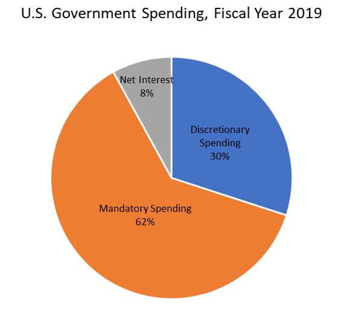
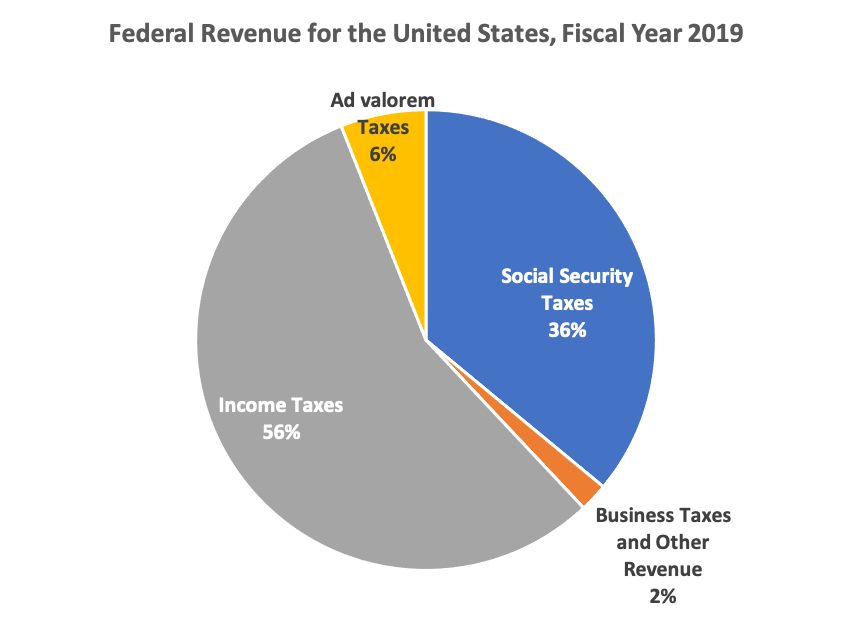

Section5.6Federal Budget, Deficit and National Debt
Objectives:Section 5.6 Federal Budget, Deficit and Debt
Students will be able to:
Explain the federal budget process
Explain the difference between the federal deficit and national debt
Convert large numbers from expanded form to a decimal of millions, billions, trillions, etc. and back to expanded form
Convert large numbers between decimals of millions to billions or trillions, etc.
Calculate the debt to GDP ratio for a country or state
Calculate the debt per person for a country or state
Read and use pie charts to do calculations
Another important part of democracy is how to fund the government. We studied how to calculate federal income taxes in Section 2.5. In this section we will study where that money goes and what happens when the government spends more than it earns in taxes.
Figure5.6.1.Alternative Video Lessons
Subsection5.6.1Federal Income and Spending
Federal income comes from our individual income taxes and business income taxes. Income is also borrowed by selling savings bonds, notes and Treasury bills (United States Government, 2019). The government has to pay interest on the national debt. After that, there are two types of spending, mandatory and discretionary. Mandatory spending includes Social Security payments, Medicare and other items required by law. Discretionary spending is the amount that Congress budgets annually to fund programs and agencies. Here is a pie chart showing the percentage of spending for each type in 2019. The data comes from the Congressional Budget Office (Congressional Budget Office, 2020).

Subsection5.6.2The Federal Budget Process
The Federal Budget is like a home budget, with income and expenses. The U.S. Government’s fiscal year goes from October 1st of one year to September 30th of the next year. Work on the budget begins about a year and a half before the budget is finalized.
First, departments and agencies submit their proposals to the White House. Then the President submits their budget plan to Congress. Each chamber of Congress analyzes the proposal and makes their own budget resolution. Then a conference committee of House and Senate members resolves the differences between the two plans and makes a final version that each chamber votes on.
After the budget is passed, the Senate and House Appropriations committees distribute the discretionary part of the funding among 12 subcommittees that oversee different groups of agencies. As before, conference committees meet to merge the two versions of the appropriations bills. All 12 bills must be passed by both the Senate and the House and then signed by the President to enact the new budget.
If any appropriations bill is not signed by September 30th, there is no budget for the new fiscal year. In this case, Congress must pass a continuing resolution to temporarily fund the government. If they do not, or if the president does not sign it, the governement will shut down. The last government shutdown went from December 22, 2018 to January 25, 2019. This was the longest shudown in U.S. history and left over 800,000 federal workers either working without pay or being furloughed at home (Robert, 2020).
Subsection5.6.3The Federal Surplus or Deficit
If the government spends less than it collects in income, there will be a budget surplus for that year. If it spends more than it collects, there will be a deficit for that year. It is also possible to have a balanced budget where the spending equals the income. The federal deficit refers to the budget shortfall in a single time period, like a quarter or a year. For example, in the Fiscal Year 2018, the U.S. deficit was $779 billion. The graph below shows the federal deficit or surplus each year since 1974 using data from the Congressional Budget Office (Congressional Budget Office, 2014).
It is hard to find graphs with a vertical axis in dollars becase the value of the dollar changes over time. One dollar in 1974 could buy a lot more than it can today. In the graph above, each dollar amount is converted to the equivalent of 2013 dollars to account for that. The vertical scale is in billions of 2013 dollars. The largest deficits in 2009 to 2012 were from spending and corporate bailouts to recover from the Great Recession of 2008.
On the graph above, $1 on the vertical scale represents one billion dollars or $1,000,000,000. The highest deficits go down to about -$1,500 billion, which we would write as -$1,500,000,000,000. Here is a chart that shows large numbers and how many zeros they have.
Number
Name
$1,000
One thousand
$1,000,000
One million
$1,000,000,000
One billion
$1,000,000,000,000
One trillion
$1,000,000,000,000,000
One quadrillion
$1,000,000,000,000,000,000
One quintillion
Instead of writing all the zeros, we can abreviate large numbers using decimals. For example, 1,200,000 can be written as 1.2 million. We can write 900,000 as 0.9 million. We can also translate the other way and write 4.567 trillion as 4,567,000,000,000. Note there can be more than one way to write a number. We could write 400,000,000 as either 400 million or 0.4 billion. It is convenient that we put the decimal where the comma goes and vice versa.
Example5.6.2.
Write each number using a decimal abreviation.
4,873,000
1,500,000,000
500,000,000,000
8,300,000
Solution.
Our method is to find the millions place which is the 7th digit from the right. If the number starts there, use millions. If the number is larger, count 3 more places for billions and 3 more places for trillions.
4,873,000 = 4.873 million
1,500,000,000 = 1.5 billion
500,000,000,000 = 500 billion or 0.5 trillion
8,300,000 = 8.3 million
Example5.6.3.
Write each number in expanded form.
5.7 million
9.22 trillion
100.2 billion
0.25 trillion
Solution.
Our method is to put a comma where the decimal is and then add zeros to get to the right place value. If the decimal is less than one, we move down to the next lower grouping as shown in part d.
5.7 million = 5,700,000
9.22 trillion = 9,220,000,000,000
100.2 billion = 100,200,000,000
0.25 trillion = 250 billion = 250,000,000,000
Subsection5.6.4Debt to GDP Ratio
A more common way to measure the deficit is as a percentage of the gross domestic product. The gross domestic product, or GDP, is the total value of all the finished goods and services produced within a county’s borders in a specific period of time. The GDP is a measure of the size of an economy. The growth rate of the GDP is one measure of a nation’s economic health (Bureau of Economic Analysis, 2019). The GDP of the United States in 2019 was $21.73 trillion but due to the COVID-19 pandemic, there was a drop in the second quarter of 2020 to $19.74 trillion. (Bureau of Economic Analysis, 2020).
Now we can look at more graphs that are written in terms of the percent of GDP. Here is a graph of federal spending and revenues as a percentage of the GDP 1 
For each year, if we take the revenue and subtract the spending, we get the budget surplus or deficit. If the result is negative it is a deficit. And here is a graph of the deficits in terms of percentage of GDP 2 
The words deficit and debt are easily confused because they have similar meanings. The deficit is the yearly shortfall, and the national debt is the total cumulative amount of debt held by the government.
As you can see from the previous graphs, most years had a budget deficit. If we add all of those up over time, this is what the national debt looks like 3 
Just like we pay interest on our personal debt, the U.S. pays interest on the national debt. The interest on the debt is expected to keep increasing as shown in this graph 4 
There are several websites that keep a running total of the national debt. One of them is USDebtClock.org 5 
usdebtclock.org
. This one also shows the population, debt per citizen and debt per taxpayer. It shows the spending and deficit with counters that are constantly moving. At the bottom you can also see the debt to GDP ratio compared with previous ratios. The rest of the website shows statistics like the GDP, income tax revenue, median income, unemployment and much more. You can also see statistics for other states and countries.
Now let’s do some calculations with these large numbers in the next example.
Example5.6.4.
Here are some approximate values for the U.S. from the Fiscal Year 2018: October 1, 2018 to September 30, 2019.
Federal Budget (Spending): $4.407 trillion
Federal Revenue Estimate: $3.422 trillion
National Debt: $21.803 trillion
Interest on the National Debt for 2018: $332.637 billion
Gross Domestic Product: $20.656 trillion
Population: 329 million people
Calculate the budget surplus or deficit for this fiscal year.
Calculate the debt to GDP ratio as a percentage.
How much debt does the U.S. have per person (per capita)?
How much interest is due on the national debt per person?
Solution.
To calculate the budget surplus or deficit, we subtract the spending from the revenue, and we get:
The result is negative, so there is a deficit of $985 billion. The word deficit indicates that the number is negative. If we wrote a deficit of -$985 billion that would be incorrect because it would be a double negative.
To calculate the debt to GDP ratio, we divide using the order of the wording. For example, the ratio of a to b would be \(a:b\) or \(a÷b\text{.}\) So we will take the total amount of national debt and divide it by the GDP:
\(\frac{\text{national debt}}{\text{GDP}}= \frac{\$21.803\text{ trillion}}{\$20.656 \text{ trillion}}=1.06 \text{ or } 106\%.\)
The debt to GDP ratio is 106%.
“Per†is another key word for division, so to calculate the debt per capita or per person, we divide the national debt by the population.
\(\frac{\text{national debt}}{\text{population}} =\frac{\$21.803\text{ trillion}}{329\text{ million people}}\)
Notice that the debt is written in trillions and the population is in millions, so we can’t divide these numbers yet. We need to put them into the same units. We can either write both of them in expanded form like this:
\(\frac{\$21,803,000,000,000}{\$329,000,000}=\$66,271\text{ per person.}\)
Or instead of writing out all the zeros, we can convert one of the numbers to match the other. In this situation it seems easier to convert $21.803 trillion to 21,803,000 million and then divide.
\(\frac{\$21.803 \text{ trillion}}{329\text{ million people}}=\frac{\$21,803,000 \text{ million}}{329 \text{ million people}}=\$66,271\text{ per person.}\)
To find out how much interest is due on the national debt per person, we will divide the interest by the population.
\(\frac{\text{interest}}{\text{population}}=\frac{\$332.637}{329\text{ million people}}\)
Again, the units do not match. This time we will convert the other way and change 329 million people into 0.329 billion people, and we have:
\(=\frac{\$332.637\text{ billion}}{0.329\text{ billion}}=\$1,011.05 \text{ per person.}\)
Or you can always write out all the zeros like this and get the same answer.
\(\frac{\$332,637,000,000}{329,000,000}=\$1,011.05\text{ per person.}\)
Example5.6.5.
One advantage of the Debt to GDP ratio is you can compare different countries with economies of different sizes. Let’s look at South Korea for comparison. Here are some approximate values, from 2020 (Commodity.com, 2020).
Since one of the numbers is in trillions and the other in quadrillions, we have to make them match before we can divide. We will change the GDP into trillions:
Again the units don’t match so we must either write all the zeros or make sure they are in the same units. In this case we will change the debt into millions but there are many ways you could do it.
We can also do calculations with large numbers that involve percentages. We will look at some pie charts related to government income and spending.
Example5.6.6.
In a previous example, we saw that the federal revenue estimate for 2019 was $3.422 trillion. Use the pie chart to calculate the dollar value of each revenue source shown in the graph.

Solution.
There are 4 segments in the pie chart, showing 4 different types of revenue. For each type, we will multiply the decimal form of the percentage by the total revenue:
Individual Income Taxes: (0.56)($3.422 trillion) = $1.916 trillion
Social Security Taxes (Payroll Taxes): (0.36)($3.422 trillion) = $1.232 trillion
Corporate Taxes and Other: (.02)($3.422 trillion) = $0.0684 trillion or $68.4 billion
Ad Valorum (Excise Taxes and other): (.06)($3.422 trillion) = $205.3 billion
Example5.6.7.
In a previous example we also saw that the total amount of the federal budget in 2019 was $4.407 trillion. Use the pie chart of federal spending to calculate the dollar amounts of each of the following types of spending.
Defense
Social Security Payments
Healthcare
Education
Solution.
We will take the decimal form of the percentage of each type of spending and multiply it by the total budget amount of $4.407 trillion.
Defense: (0.22)($4.407 trillion) = $0.9695 trillion or $969.5 billion
Social Security: (0.25)($4.407 trillion) = $1.102 trillion
Education: (0.03)($4.407 trillion) = $0.1322 trillion or $132.2 billion
In this chapter, we have looked at many important quantitative aspects of government: apportionment, voting methods, how the president is chosen, gerrymandering and the federal budget. Filling out the census, being informed and voting are extremely important for the U.S. democracy. Please make up your own mind and vote if you are eligible.
Exercises5.6.8Exercises
1.
Where does the U.S. federal income come from?
2.
What are the two types of federal spending?
3.
How many appropriations bills must be passed to approve the new federal budget?
4.
When is the deadline for the new budget to be approved?
5.
What is the difference between federal deficit and debt?
6.
What is the Gross Domestic Product?
7.
Write each number using a decimal abreviation.
4,300,000,000
12,567,000,000,000
500,000,000
6,040,000
8.
Write each number using a decimal abreviation.
63,651,000,000,000
93,600,000
119,930,000,000
6,001,000,000
9.
Write each number in expanded form.
5.7 million
9.22 trillion
100.2 billion
0.25 trillion
10.
Write each number in expanded form.
0.52 quadrillion
1.49 billion
9.07 trillion
800 million
Exercise Group.
For each country in problems 11-16, find the following. Data from Commodity.com (Commodity.com, 2020).
The debt to GDP ratio as a percentage.
The amount of debt per person.
The amount of interest paid per year per person.
11.
In Columbia, the unit of currency is the Columbian peso, abbreviated as COP$ or C$.
Population: 48.9 million people
National Debt: C$ 270.978 trillion
Gross Domestic Product: C$ 491.504 trillion
Interest Payments per year: C$ 16.628 trillion
12.
In Pakistan, the unit of currency is the Pakistani rupee or Rs.
Population: 209.7 million people
National Debt: Rs 24.255 trillion
Gross Domestic Product: Rs 27.354 trillion
Interest Payments per year: Rs 2.033 trillion
13.
In Poland, the unit of currency is the złoty, or zł.
Population: 38,492,299 people
National Debt: 1.223 trillion zł
Gross Domestic Product: 1.981 trillion zł
Interest Payments per year: 52.500 million zł
14.
In Australia, the unit of currency is the Australian dollar, AUD or A$.
Population: 24.711 million people
National Debt: A$ 645.316 billion
Gross Domestic Product: A$ 1.927 trillion
Interest Payments per year: A$ 19.73 billion
15.
In South Africa, the unit of currency is the South African rand or R.
Population: 54.5 million people
National Debt: R. 3.736 trillion
Gross Domestic Product: R. 6.186 trillion
Interest Payments per year: R. 196.843 billion
16.
In Malaysia, the unit of currency is the Malaysian ringgit or RM.
Population: 54.5 million people
National Debt: RM. 792.474 billion
Gross Domestic Product: RM. 1.444 trillion
Interest Payments per year: RM. 27.682 billion
17.
The total state budget for the state of Virginia in 2018-2019 is approximately $63.9 billion and their population is about 8.5 million people. Use the pie chart (Virginia Department of Planning and Budget, 2018) to calculate how much is budgeted for:
Transportation in total
Health and human resources per person
Public safety in total
18.
The Wisconsin state budget for 2018 was $8.9 billion and their population is about 5.8 million. Use the pie chart (Wisconsin Budget Project, 2020) to calculate how much was budgeted for: